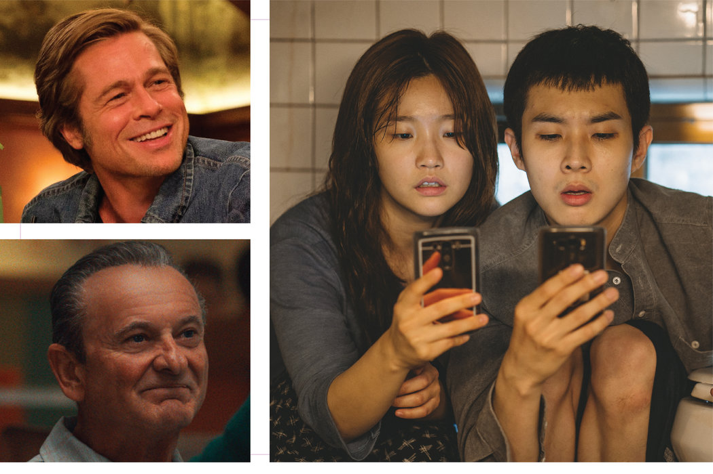

Best Movies of 2019
A.O. SCOTT, MANOHLA DARGIS
翻译：Deng Yan、Lola

左上起顺时针：《好莱坞往事》、《寄生虫》和《爱尔兰人》。 CLOCKWISE FROM TOP LEFT: SONY PICTURES; NEON; NETFLIX, VIA ASSOCIATED PRESS
Films Worth Arguing About
值得辩论的电影
As the movie year winds down, I would like to express my gratitude to Martin Scorsese. Not only for making “The Irishman,” his best movie in a long time and one of the best of 2019 (see below), but also for reminding the world of the value of cinema.
随着电影的一年进入尾声，我要对马丁·斯科塞斯(Martin Scorsese)表达我的感激。不仅是因为他制作了《爱尔兰人》，这是他很长一段时间里的最佳影片，也是2019年最佳影片之一（见下文），还因为他向世界提醒电影的价值。
The art form is in one of its periodic identity crises. A big chunk of our collective attention — we don’t yet know how big, or with what consequences — is migrating to streaming platforms whose offerings include a lot of the stand-alone single-episode narratives that we used to see mainly in theaters. (Yes, I know: We saw a lot of sequels, too.) Movie theaters, meanwhile, are dominated by franchise, I.P.-driven spectacles like the entities in Disney’s Marvel Cinematic Universe, which Scorsese singled out, in an interview in Empire magazine and then in a New York Times Op-Ed, as “not cinema.”
这个艺术形式正处在又一个周期性身份危机中。我们集体注意力的很大一部分（我们尚不知道多大，或后果如何）正迁移到流媒体平台，那里有很多独立的单集叙事片，在过去我们大多是在电影院里看的。（是的，我知道：我们也看了很多续集。）与此同时，类似迪士尼公司的漫威电影宇宙(Marvel Cinematic Universe)这样的以IP驱动的系列电影奇景占据着电影院，斯科塞斯在《帝国》(Empire)杂志的一次采访以及在《纽约时报》的一篇观点文章中特意提到这类电影，称它们“不是电影”。
The dust-up that followed his remarks was predictable. Members of the aggrieved superhero-loving community — some of whom draw Disney paychecks — tut-tutted Scorsese for being old, out of touch, overrated and, most of all, elitist. Accusing Scorsese (and his defenders) of elitism was exemplary pseudo-populism, a defense of corporate hegemony disguised as a celebration of mass taste. To question the apparent preferences of millions of consumers is to risk being labeled a snob.
他这番评论所掀起的波澜是可预见的。怨愤的超级英雄爱好者（有的领着迪士尼的薪水）嫌斯科塞斯年纪大了，不食人间烟火，过誉，以及最主要的——精英主义者。将斯科塞斯（及其捍卫者）谴责为精英主义，这实际上是标准的伪民粹主义，伪装成赞颂大众口味而实际上是为商业霸权辩护。对千千万万消费者的鲜明偏好发起质疑，可能导致你被扣上装高冷的帽子。
In the imaginations of their sore-winner, alpha dog-underdog opponents, the snobs are simultaneously too dangerous to ignore and too enfeebled to take seriously. The response is basically, Shut up! Shut up! Shut up! Nobody’s listening to you anyway! And the anti-elitist argument is at bottom a matter of numbers, of quantity trumping quality. That “Avengers: Endgame” and “Joker” broke records at the global box office surely means something, even if the movies themselves don’t.
在这些反对者——一群惨败的赢家，强势的弱势者——的想象里，装高冷者的危险不容小觑，但同时他们又太弱了，不值得认真对待。回应基本上是：闭嘴！闭嘴！闭嘴！反正没人在听你说！反精英主义者的论点从根本上说是数量问题，以数量取胜而不是质量。《复仇者联盟：终局之战》和《小丑》打破全球票房纪录一定意味着什么，即使电影本身未必。
But to paraphrase Justin Timberlake’s character in “The Social Network”: a billion dollars isn’t cool. You know what’s cool? Movies that offer something more than the sullen pseudo-politics of “Joker” or the elaborate pro-status-quo theatrics of “Avengers.” Movies that, rather than fetishizing self-pity or sentimentalizing domination, illuminate the cruelty, the comedy and the grace of the human condition. Movies that treat you as something other than a passive spectator or an obedient, presold “fan.” Movies that are actually worth arguing about, and thinking about.
但借用贾斯汀·汀布莱克(Justin Timberlake)在《社交网络》中的话：十亿美元并不酷。你知道什么很酷吗？酷的电影能给你的东西，不只是《小丑》里沉闷的伪政治，或《复仇者联盟》赞美现状的精心演绎。酷的电影不顾影自怜或美化征服，而是点出人类状态的残忍、谐趣和优雅。酷的电影不会把你当成被动的观众或听话的预售“粉丝”。酷的电影值得争论，和思考。
Which is more or less what Scorsese meant by “cinema.” The word might make even some of his sympathizers a little uncomfortable. Because it also exists in other languages, including French, using it might make you sound like you’re putting on airs. (I myself prefer the Italian pronunciation.) But far from signifying snootiness, the cosmopolitanism of the term is a sign of the essentially democratic nature of the art form itself, which is able to leap over barriers of language, custom and ideology like few others.
这或多或少是斯科塞斯所说的“cinema”。这个词甚至可能让一些对他有好感的人感到不舒服。由于它也存在于其他语言中，包括法语，说这个词可能会让你听上去像卖弄风雅。（我本人更喜欢意大利语的发音。）但是，这远非意味着虚伪，这个词包涵着世界主义，它是这个艺术形式自身民主特性的基本标志，它能跨越语言、习俗和意识形态的障碍，少有事物可与它比拟。
Cinema also migrates across platforms, which is another reason to embrace the old/new name. In the digital age, “film” is a technological misnomer, attached to the glories of a specific, no-longer-dominant (though not entirely obsolete) way of making and projecting pictures. “Movies” are, mostly, what we see in theaters (or cinemas, just to confuse the issue further), while “moving pictures” pop up on nearly every surface, distracting us from our distraction.
Cinema同时还是跨平台的，这是又一个欣然接纳这亦新亦旧的名称的理由。在数字时代，“film”是一种技术误用，与一种特定的、不再占主导地位的（尽管也不是完全过时的）画面制作和放映方式有关。“Movie”则是我们在电影院(theater)里——让这个问题愈发困惑的是，也可以是在cinema里——看到的东西，而“moving picture”在几乎任何地方都跳出来，转移我们已经分神的注意力。
“Cinema” is more capacious and also more specific, because it refers to an aesthetic rather than a technological category. The medium, right now, is a mess. But the art form is in a state of rude, contentious health. Looking back on my favorites released in the United States since January, I’m struck by how many bristle with an argumentative energy that seems to match the times, even if a lot of the filmmakers cast their glances back toward earlier modern moments.
“Cinema”更加宽宏，也更具体，因为它指的是美学，而非技术类别。这个媒介目前是一团糟。但它作为艺术形式正处于一种强壮好斗的健康状态。回顾自1月份以来在美国发行的我最喜欢的影片，令我震惊的是很多都一种与这个时代相符的争辩劲头，即使很多电影导演把目光投向较早的现代时期。
Bong Joon Ho’s “Parasite” and Noah Baumbach’s “Marriage Story” unfold in a restless present tense, but so does Greta Gerwig’s “Little Women,” even though it takes place more than 100 years ago. “The Irishman” and “Once Upon a Time … in Hollywood” feel like elegies to an older cinematic ethic, while “Atlantics” and “The Edge of Democracy” press into an uncertain future, the terms of which are prophesied by the blood and rhetoric of Mike Leigh’s mighty “Peterloo.” The top two entries on my list do all of that and more, digging so deep into the particular lives of their characters — a North Macedonian beekeeper and a film student in London — that they seem to transcend time altogether.
奉俊昊的《寄生虫》和诺亚·鲍姆巴赫的《婚姻故事》以一种不安的现在时态展开，但是格雷塔·葛韦格的《小妇人》也是如此，即便它发生在100多年前。《爱尔兰人》和《好莱坞往事》感觉就像是一曲致古老电影伦理的挽歌，而《大西洋》和《民主的边缘》则进入了一个不确定的未来，这未来的表述，又在麦克·李(Mike Leigh)的《彼得卢》中用血和雄辩做了预示。我的电影名单上的前两项不仅完成了所有这些任务，还深入挖掘了它们的角色的特殊生活——北马其顿养蜂人和伦敦的电影系学生——他们似乎完全超越了时间。
There’s more. There’s always more! As long as we trust our eyes and know where to look.
还有更多。总会有更多！只要我们相信自己的眼睛并知道去哪里找。
纪录片《蜂蜜之地》中的哈提兹·穆拉托娃。 NEON
‘Honeyland’ (Tamara Kotevska and Ljubomir Stefanov)
《蜂蜜之地》(Honeyland) 塔玛拉·科特夫斯卡(Tamara Kotevska)和卢博米尔·斯特法诺夫(Ljubomir Stefanov)
Conceived as a government-sponsored informational video, this documentary is nothing less than a found epic, a real-life environmental allegory and, not least, a stinging comedy about the age-old problem of inconsiderate neighbors.
这部纪录片被认为是由政府赞助的宣讲视频，但它可媲美一部史诗，它是一个现实生活中的环境寓言，以及一个关于自私邻居这个老套问题的讽刺喜剧。‘The Souvenir’ (Joanna Hogg)
《纪念品》(The Souvenir) 乔安娜·霍格(Joanna Hogg)
Honor Swinton Byrne plays a diffident version of the director’s younger self in an elusive autobiographical film that also functions as a kind of superhero origin story.
奥诺·斯温顿·伯恩(Honor Swinton Byrne)在这部难以捉摸的自传体影片中扮演该片导演年轻时羞怯版的自己，影片也可以当作是超级英雄的起源故事。‘Parasite’ (Bong Joon Ho)
《寄生虫》(Parasite) 奉俊昊
I can’t think of a film that made me sadder about the state of the world and more jubilant about the state of movies.
我想不到还有什么电影比它更让我对世界现状感到悲观，以及对电影现状感到欢呼鼓舞。‘The Irishman’ (Martin Scorsese)
《爱尔兰人》(The Irishman) 马丁·斯科塞斯
What is cinema? If you have three and a half hours to spare — and you do — this is a pretty good answer.
电影是什么？如果你有三个半小时的时间——你肯定有——它会给你很好的答案。‘Marriage Story’ (Noah Baumbach)
《婚姻故事》(Marriage Story) 诺亚·波拜克(Noah Baumbach)
The joys and miseries of a creative family in 21st-century New York and Los Angeles.
创意家庭在21世纪纽约和洛杉矶的欢乐和伤痛。‘Little Women’ (Greta Gerwig)
《小妇人》(Little Women) 格蕾塔·葛韦格(Greta Gerwig)
The joys and miseries of a creative family in 19th-century Massachusetts.
创意家庭在19世纪马萨诸塞州的欢乐和伤痛。‘Peterloo’ (Mike Leigh)
《彼得卢》(Peterloo) 麦克·李(Mike Leigh)
British politics in 1819, full of passion and pageantry, bad faith and factionalism. It feels like a very short march from then to now.
1819年的英国政治，充满着激情、盛况、恶意和党同伐异。感觉跟现在并没有太大区别。‘The Edge of Democracy’ (Petra Costa)
《民主的边缘》(The Edge of Democracy) 佩特拉·科斯塔(Petra Costa)
This harrowing documentary, a thoughtful inside look at the events leading up to the election of Jair Bolsonaro, Brazil’s populist president, is the scariest movie of the year.
这部令人痛苦的纪录片，以缜密的方式揭示了巴西民粹主义总统贾尔·博尔索纳罗(Jair Bolsonaro)当选过程的内情，是本年度最恐怖的电影。‘Once Upon a Time … in Hollywood’ (Quentin Tarantino)
《好莱坞往事》(Once Upon a Time … in Hollywood) 昆汀·塔伦蒂诺(Quentin Tarantino)
Another answer to the “what is cinema?” question, with special attention to Brad Pitt’s jawline and Margot Robbie’s feet.
另一个对“什么是电影”的回答，值得特别留意的是布拉德·皮特(Brad Pitt)的颚线和玛格特·罗比(Margot Robbie)的脚。‘Atlantics’ (Mati Diop)
《大西洋》(Atlantics) 玛缇·迪欧普(Mati Diop)
See No. 3. A startlingly original debut feature about the specters that haunt Dakar, and everywhere else.
见3。一部令人惊叹的原创处女作，关于困扰达喀尔及全世界的幽灵的故事。
And … “American Factory,” “Ash Is Purest White” “Birds of Passage,” “Booksmart,” “The Chambermaid,” “An Elephant Standing Still,” “Ford v Ferrari,” “I Do Not Care if We Go Down in History as Barbarians,” “Gloria Bell,” “Her Smell,” “High-Flying Bird,” “The Nightingale,” “Pain and Glory,” “Richard Jewell,” “Transit,” “Us.”
以及……《美国工厂》(American Factory)、《江湖儿女》(Ash is Purest White)、《候鸟》(Birds of Passage)、《高材生》(Booksmart)，《女服务员》(The Chambermaid)、《大象席地而坐》(An Elephant Standing Still)、《极速车王》(Ford v Ferrari)、《罗马尼亚野蛮史》(I Do Not Care if We Go Down in History as Barbarians)、《葛洛莉亚·贝尔》(Gloria Bell)、《她的气味》(Her Smell)、《高飞鸟》(High-Flying Bird)、《夜莺》(The Nightingale)、《痛苦与荣耀》(Pain and Glory)、《理查德·朱维尔的哀歌》(Richard Jewell)、《过境》(Transit)、《我们》(Us)。
Manohla Dargis
曼诺拉·达吉斯(Manohla Dargis)
Cinema in the Age of Conglomerates
大财团时代的电影
Seen any good or great movies lately? If you are a film critic making a Top 10 list of the year’s best, your annual agony is never that there are not enough choices — just the opposite. About 800 new movies will have opened in New York by the end of the year, which is 11 percent fewer than were released a couple of years ago. The changes in how movies are now distributed are having a pronounced impact on theatrical exhibition, which may be a disaster or a welcome course correction in a glutted market.
最近看了什么好或极好的电影吗？如果你是电影评论人，正在写年度十佳电影，你每年的苦恼都不会是不够选，事实正相反。到年底，纽约这一年上映的新电影总数多达约800部，与几年前发布的数量相比低了11%。现在电影发行的方式有所改变，对电影院放映有着显著影响，对于这个供应过剩的市场来说，这可能会是一场灾难，或者带来一次喜闻乐见的路线调整。
The better movies generally open in theaters, just as they have long done. In the past, a lot of junky titles would have gone straight to video; these days a lot go straight to streaming, while many others quickly open and close in theaters before they too flow into streaming purgatory. Despite this online maw, movies still play in theaters because, well, people still like the big screen. Some play solely to qualify for awards or because filmmakers also like the big screen. Amazon and Netflix open movies in theaters because they see those same filmmakers and awards as a way to keep, and attract, subscribers.
比较好的电影大多会在电影院揭幕，和以往一样。过去，许多劣质作品会直接制成录影带；而现在很多会直接成为线上电影，另外的很多电影会在落入流媒体的炼狱之前，在电影院中迅速开映然后下映。虽然线上需求强大，但人们依然喜欢大银幕。有一些电影在银幕上放映只是为了满足获奖资格，或是电影人也喜欢大银幕。亚马逊(Amazon)和Netflix也会放映影院的电影，因为他们觉得那些电影人和奖项是留住和吸引订阅用户的方式。
Cinema has always been a moving target, from the cinematograph era to the streaming. That’s one reason the debate that raged over Martin Scorsese’s comments about Marvel movies not being cinema feels like a dead end. He is right that nothing is at risk in them, or rather very little. Even the best ones are absent real risk because they are not films in the old-fashioned sense: They are delivery systems for an integrated array of products and experiences (other movies, theme parks, toys). Their formula is a feature not a bug. The appeal of the familiar is one way powerful entertainment companies turn ardent viewers into brand loyalists, reaching fans with a cradle-to-grave consumer strategy.
从放映机时代到流媒体时代，电影一直是个移动的靶子。所以马丁·斯科塞斯说漫威电影不是电影的评论所引发的热烈讨论，感觉不会有什么结果。他说得对，这些电影没有风险，或风险很小。就连最好的漫威电影也没有面临真正的风险，因为它们不是老派意义上的电影：它们是综合了很多产品和体验的传递系统（其他电影、主题公园、玩具）。它们采用的配方不是失误，是有意而为。强大的娱乐公司利用熟悉事物的吸引力，将狂热的观众变成品牌的忠实追随者，培养粉丝成为终生消费者。
History will remember this period for Disney’s monopolistic muscle; it will also remember Scorsese’s films. It seems unlikely, though, that history will remember many of the movies Disney now makes. This probably matters little to the media giant, which has had a busy, record-breaking year. In March, it finalized its purchase of 21st Century Fox, effectively destroying a Hollywood pillar. The origins of Fox can be traced back to around 1904, when William Fox bought a share of a Brooklyn nickelodeon. Disney picked up the empire that rose from that humble beginning for $71.3 billion and will absorb it for the express purpose of leveraging Fox assets to become a global streaming behemoth, just like Netflix.
历史会铭记这个迪士尼垄断一切的时期；也会记住斯科塞斯的电影。但是，迪士尼现在制作的许多电影似乎是会被历史遗忘的。对于这个度过了忙碌的、破纪录的一年的传媒巨头来说，这好像无关紧要。三月，迪士尼完成了对21世纪福克斯(21st Century Fox)的收购，实际上是摧毁了好莱坞的一根支柱。福克斯的起源可以追溯到1904年前后，当时威廉·福克斯(William Fox)买下了一家布鲁克林五分钱戏院的股份。迪士尼以713亿美元承接了这个出身卑微的帝国，两者将合为一体，借助福克斯的资产成为和Netflix一样的全球流媒体巨头。
The end of Fox feels like another rattle in the slow death of what many still call the studio system, which hasn’t resembled the factorylike days of the old MGM for a long time. You can mourn the end of the studios and revere their legacy — the art, craft and technique — but there’s no mourning their racism, sexism, cultivated stupidity and contempt for art. The old Hollywood studios perfected a way of making films and hired artists and artisans who succeeded within those confines or transcended them (or failed or fled). Like the young Scorsese and his friends, the Cahiers du Cinéma critics who became directors, championed those films. André Bazin honored “the genius of the system.”
福克斯的终结，像是制片厂制度（人们仍在这样称呼它）在垂死挣扎中的又一声哀鸣。从很久前开始，它就已经走出旧米高梅的工厂风格。你可以对制片厂的终结表示哀悼，向它们的遗赠致敬，其中包括艺术、工艺和技术。但不要为它们的种族歧视、性别歧视、考究的蠢行和对艺术的藐视哀悼。老牌好莱坞制片厂找到了完美的方式来制作电影，并聘请能在这种限制中取得成功或超越限制（或是失败或逃走）的艺术家和匠人。和年轻的斯科塞斯以及他的朋友们一样，《电影手册》(Cahiers du Cinéma)那些后来成为导演的评论人支持了那种电影。安德烈·巴赞(André Bazin)赞美“体制的高明之处”。
I tend to think that Hollywood reached its zenith before 1960. Many of the greatest American films made in the decades since were produced in spite of terrible studio ideas, more by accident than design, or were made in the independent realm (at times with European or Asian money) or while the studios were having a fling with adventure. One such moment was in the 1970s; another occurred recently when Miramax shook up the indie world and the studios noticed. Their interest was fleeting but it’s worth recalling that Disney released Wes Anderson’s “Rushmore,” Paramount backed Paul Thomas Anderson’s “There Will Be Blood” and Warner Bros. put out Richard Linklater’s “Before Sunset.”
我一直认为，好莱坞在1960年代之前已经达到了顶峰。之后几十年来，虽然制片厂的想法很糟糕，但还是出现了很多最伟大的美国电影，更多因意外而非规划产生，或是在独立领域制作的（有时是获得了欧洲或亚洲的投资)，或是当片场突然想冒冒险。其中一个时刻是1970年代；另一个则是最近发生的，是当米拉麦克斯公司(Miramax)震撼了独立圈，吸引了制片厂的注意。他们的兴趣正在迅速消退，但值得回顾的是，迪士尼发行了韦斯·安德森(Wes Anderson)的《青春年少》(Rushmore)，派拉蒙(Paramount)投资了保罗·托马斯·安德森(Paul Thomas Anderson)的《血色将至》(There Will Be Blood)，以及华纳兄弟(Warner Bros)推出了理查德·林特莱克(Richard Linklater)的《爱在日落黄昏时》(Before Sunset)。
It is also worth remembering that both Spike Lee and Kathryn Bigelow, two of the filmmakers Scorsese holds up as exemplars of cinema, have nurtured careers beyond Hollywood and sometimes despite it. After Lee made his breakout film, “She’s Gotta Have It,” he worked with the major studios but he also battled them to protect his vision and integrity. Bigelow has never directed movies that were financed by a major studio, though some have released her features. Scorsese’s recent movies have been made, as he recently pointed out, without studio help. “In the last 10 years,” he said, “my films have been independently financed under difficult circumstances.”
同样值得记住的是，被斯科塞斯誉为电影楷模的电影人斯派克·李(Spike Lee)和凯瑟琳·毕格罗(Kathryn Bigelow)能够闯出超越——有时是无视——好莱坞的事业。在凭借《她说了算》(She’s Gotta Have It)成名后，李与大片厂合作，但为了保护自己的愿景和尊严，他也会与这些片厂斗争。毕格罗从来没有执导过由大片厂出资的电影，但一些制片厂发行了她的长片。斯科塞斯最近指出，他近些年的电影都是在没有片厂帮助的情况下制作的。“在过去10年，”他说，“我的电影都是在艰难情况下由独立资金制作的。”
That is a sobering description of American mainstream movies in the age of global media conglomerates. Yet, as our yearly lists of favorites attest, great work always happens.
在全球媒体财团统治的年代，他对美国主流电影的这番描述是发人深省的。但是正如我们的年度最爱影片名单所证明的，总会有伟大的作品出现。
《痛苦与荣耀》中的安东尼奥·班德拉斯。 MANOLO PAVÓN/SONY PICTURES CLASSICS
‘Pain and Glory’ (Pedro Almodóvar)
《痛苦与荣耀》(Pain and Glory) 佩德罗·阿莫多瓦(Pedro Almodóvar)
In this wistful, deeply felt masterwork, a filmmaker faces his own mortality, awakens desire and transforms ragged life into art.
在这部充满怀念之情、情感深刻的杰作中，电影人面对自己的有限生命，唤醒了欲望，并将破碎的生活变成艺术。‘The Irishman’ (Martin Scorsese)
《爱尔兰人》(The Irishman) 马丁·斯科塞斯(Martin Scorsese)
One of the finest movies of Scorsese’s career, this haunting epic about a murderer for the mob is about tribal loyalty, male violence and a grim vision of homegrown fascism.
斯科塞斯生涯最出色的作品之一。这部令人难忘的长片以黑帮杀手为主角，讲述了宗族忠诚、男性暴力以及令人担忧的本土法西斯主义景象。‘Parasite’ (Bong Joon Ho)
《寄生虫》 奉俊昊
A perfectly directed movie from one of the greatest filmmakers working today. If you want to know what cinema is, watch this — well, just watch everything on this list.
一部由当世最伟大电影人之一执导的完美电影。如果你想对电影有更深的了解，就看看这部电影——其实，整个名单都该看。‘Little Women’ (Greta Gerwig)
《小妇人》(Parasite) 格蕾塔·葛韦格(Greta Gerwig)
At once faithful and blissfully liberated, this beautiful interpretation of Louisa May Alcott’s novel is the story of a woman finding her voice, directed by one who already has.
这部电影既忠于原作，又进行了幸福的解放。作品是路易莎·梅·奥尔科特(Louisa May Alcott)小说的美丽演绎，讲述了一名女性寻找自己声音的故事，导演是一名已经找到自己声音的女性。‘Once Upon a Time … in Hollywood’ (Quentin Tarantino)
《好莱坞往事》(Once Upon a Time … in Hollywood) 昆汀·塔伦蒂诺(Quentin Tarantino)
Tarantino’s nostalgic panegyric to Los Angeles, the internal combustion engine and old-school masculine cool is a dream of a movie. I could spend hours watching Margot Robbie’s character watch herself in a film and Brad Pitt’s cruise the magically smog-free city in a buttery yellow 1966 Cadillac.
塔伦蒂诺对洛杉矶怀旧的赞颂，内燃机和老派的男性冷静是电影的梦。我可以花上几小时，看着玛格特·罗比饰演的人物看着自己在电影里，以及布拉德·皮特开着1966年款奶油黄凯迪拉克魔幻地驶过没有烟尘的城市。‘Synonyms’ (Nadav Lapid)
《同义词》(Synonyms) 那达夫·拉皮德(Nadav Lapid)
In this corrosive, funny and sometimes shocking existential cry, a young ex-soldier flees Israel and tries to shed his country and his identity by turning himself into a Frenchman.
在具破坏性、幽默、时而令人震惊的存在主义呐喊中，前军人逃出了以色列，试图摆脱自己的国家和身份，将自己变成法国人。‘Transit’ (Christian Petzold)
《过境》(Transit) 克里斯蒂安·佩措尔德(Christian Petzold)
A brilliant allegory that imagines a world in the grip of fascism and that — as throngs of desperate people seek asylum — becomes a frightening, all-too-real vision of our own world.
这是部杰出的讽喻作品，想象了一个受法西斯主义困扰的世界。一大群绝望的人寻求庇护。这部电影成为了我们现实世界的一个可怕、过于真实的幻象。‘American Factory’ (Julia Reichert and Steven Bognar)
《美国工厂》(American Factory) 朱莉娅·赖克特(Julia Reichert)和史蒂文·博格纳尔(Steven Bognar)
This powerful documentary tracks what happens when a Chinese company takes over a shuttered Ohio General Motors factory. Everyone loses but the billionaire owner.
这部有力的纪录片追踪了一家公司接管了俄亥俄州倒闭的通用汽车工厂后发生的事情。除了亿万富翁老板之外，所有人都是输家。‘One Child Nation’ (Nanfu Wang and Jialing Zhang)
《独生之国》(One Child Nation) 王男栿和张嘉玲
Both site specific yet transcending borders, this devastating documentary is a damning look at how China’s propaganda controls both minds and bodies.
这部震撼的纪录片既有特定地点，但也超越了国界，毫不留情地审视了中国的宣传如何控制人的心灵和身体。‘The Last Black Man in San Francisco’ (Joe Talbot)
《旧金山的最后一个黑人》(The Last Black Man in San Francisco) 乔·塔尔博(Joe Talbot)
A heartfelt, often supremely lovely movie about loss, memory, race and place that Talbot created with his longtime friend, Jimmie Fails, who also stars.
这部电影由塔尔博和他的老朋友吉米·弗尔(Jimmie Fails)共同制作，后者还在电影中饰演了角色。这是一部真诚、许多地方非常可爱的电影，讲述了失去、记忆、种族和家园。
And … “3 Faces”; “Ad Astra” (Brad Pitt!); “Apollo 11”; “Atlantics”; “Ash Is Purest White”; “A Beautiful Day in the Neighborhood” (sniff, sniff); “The Brink”; “The Cave” “Charlie Says” (Mary Harron directed this year’s other must-see movie tied to the Manson murders); “Clemency” (Alfre Woodard!); “The Disappearance of My Mother”; “Dolemite Is My Name” (for the cast, especially Wesley Snipes); “Ford v Ferrari” (Matt Damon’s Tommy Lee Jones voice deserves its own credit); “Give Me Liberty” (my No. 11); “Gloria Bell” (hail Julianne Moore!); “Hail Satan?” (a great double bill with “The Brink”); “Invisible Life”; “Honeyland”; “Knock Down the House”; “Late Night”; “Leto”; “Marriage Story”; “Midnight Family”; “Pasolini”; “Peterloo”; “Richard Jewell” (minus the risible Olivia Wilde journalist); “Rolling Thunder Revue: A Bob Dylan Story by Martin Scorsese” (No. 12); “The Souvenir”; “Uncut Gems”; “Us”; “Varda by Agnès” (adieu); “Waves.” (No. 13).
还有……《三张面孔》(3 Faces)；《星际探索》(Ad Astra)（布拉德·皮特！）；《阿波罗11号》(Apollo 11)；《大西洋》(Atlantics)；《江湖儿女》(Ash Is Purest White)；《邻里美好的一天》(A Beautiful Day in the Neighborhood)（让人落泪）；《边缘》(The Brink)；《洞穴》(The Cave)；《查理说》(Charlie Says)（由玛丽·哈伦[Mary Harron]执导，又一部与曼森谋杀案相关的必看电影）；《宽宥》(Clemency)（阿尔法·伍达德[Alfred Woodard]！）；《我母亲的消失》(The Disappearance of My Mother)；《我叫多麦特》(Dolomite Is My Name)（为了演员班底，尤其是韦斯利·斯奈普斯[Wesley Snipes]）；《极速车王》(Ford v Ferrari)（马特·达蒙[Matt Damon]像汤米·李·琼斯[Tommy Lee Jones]一样的声音应该在演职员表里单列一项）；《给我自由》(Give Me Liberty)（我榜单上的第11名）；《葛洛莉亚·贝尔》(Gloria Bell)（朱利安·摩尔万岁！）；《撒旦万岁？》(Hail Satan?)（跟《边缘》一起看很不错）；《看不见的女人》(Invisible Life)；《蜂蜜之地》(Honeyland)；《登堂入会》(Knock Down the House)；《深夜秀》(Late Night)；《盛夏》(Leto)；《婚姻故事》(Marriage Story)；《午夜急救之家》(Midnight Family)；《帕索里尼》(Pasolini)；《彼得卢》；《理查德·朱维尔的哀歌》(Richard Jewell)（要是没有奥利维亚·维尔德[Olivia Wilde]饰演的可笑的记者会更好）；《滚雷巡演：鲍勃·迪伦传奇》(Rolling Thunder Revue: A Bob Dylan Story by Martin Scorsese)（第12名）；《纪念品》(The Souvenir)；《原钻》(Uncut Gems)；《我们》；《阿涅斯论瓦尔达》(Varda by Agnès)（别了，瓦尔达）；《浪潮》(Waves)（第13名）。
A.O. Scott是联合首席电影评论家。他于2000年加入《纽约时报》，并为《纽约时报书评》和《纽约时报杂志》撰稿。他还是《评论，让生活更美好》一书的作者。欢迎在Twitter上关注他 @aoscott。
Manohla Dargis自2004年以来一直是《纽约时报》联合首席电影评论家。她于1987年开始专职从事电影方面的写作，并在纽约大学获得电影研究硕士学位，她的作品被收录在几本书中。欢迎在Twitter和Facebook上关注她。